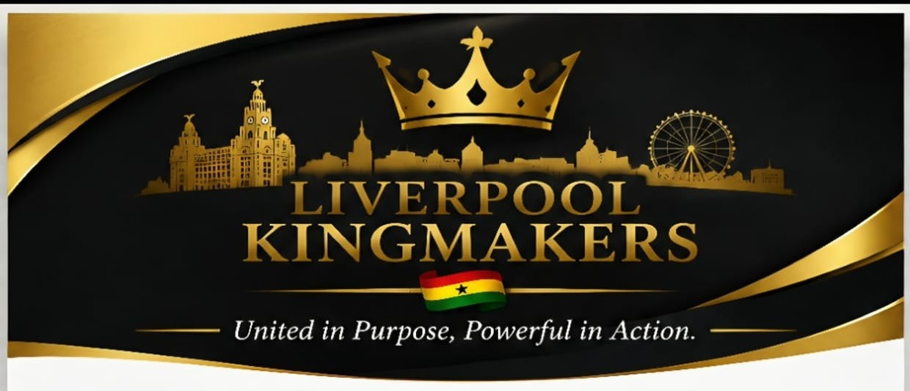

Culture & Heritage
Celebrating Ghanaian traditions, history and identity through cultural engagement and education.

Celebrating Ghanaian heritage, strengthening community bonds and inspiring the next generation in Liverpool.
Liverpool Kingmakers is a community initiative seeking to promote culture, unity, leadership and positive engagement across Liverpool.
Discover Our MissionBuilding a stronger future while honouring the traditions and values that connect us.
Celebrating Ghanaian traditions, history and identity through cultural engagement and education.
Encouraging collaboration, mutual respect and meaningful dialogue across the community.
Supporting ideas that help young people connect with their heritage and develop their potential.
We value the role of elders, cultural traditions and community leadership. We seek constructive dialogue about how these values can serve present and future generations.
SPECIAL ANNOUNCEMENT
Liverpool Kingmakers is exploring plans for the ceremonial enstoolment of a Queen Mother and a Chief for the Ghanaian community in Liverpool.
Further details, including the proposed date, venue and ceremonial arrangements, will be announced following community consultation and confirmation.
United in Purpose, Powerful in Action.
Interested in Liverpool Kingmakers, cultural activities or community partnerships? We'd welcome your interest.
Website: www.liverpoolkingmakers.org
For enquiries, please email us at info@liverpoolkingmakers.org.